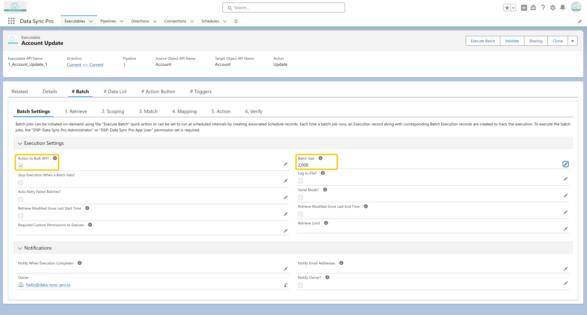

<p>
  The <strong>maximum batch size</strong> in Data Sync Pro (DSP) is 2,000 records per batch. For
  <strong>remote</strong> Connections – To set the batch size to 2,000, "Action to Bulk API" must
  be enabled, as Salesforce’s regular API does not support DML operations with
  more than 200 records per request.
</p>
